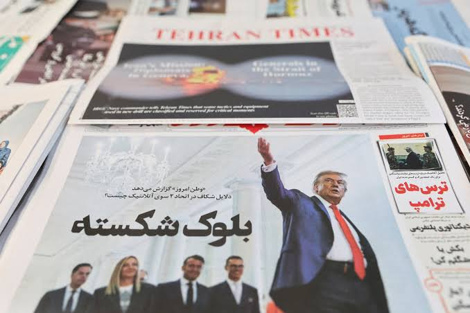

US–Iran War: Latest Situation Tensions between the United States and Iran have escalated once again after a recent ceasefire collapsed. Both countries have exchanged airstrikes, missile attacks, and drone operations, raising fears of a wider regional conflict. The United States says its military actions are aimed at protecting its forces and ensuring freedom of navigation in the Strait of Hormuz, while Iran accuses the U.S. of violating previous agreements and escalating the conflict. The latest fighting has affected several countries in the Middle East, with attacks reported near U.S. military facilities in Bahrain, Kuwait, and Jordan. The Strait of Hormuz, one of the world's busiest oil shipping routes, remains at the center of the dispute. Any disruption to shipping through the strait could impact global oil prices and international trade, prompting calls from world leaders for restraint and diplomacy. Despite international efforts to restore peace, both nations continue to accuse each other of violating ceasefire terms. Diplomatic negotiations remain difficult, and military operations have intensified in recent days. The ongoing conflict has increased humanitarian concerns and created uncertainty across the region, with governments and international organizations urging an immediate de-escalation to prevent a broader war.
To view more about the US-Iran conflict, click here to read the latest news and updates from BBC News.